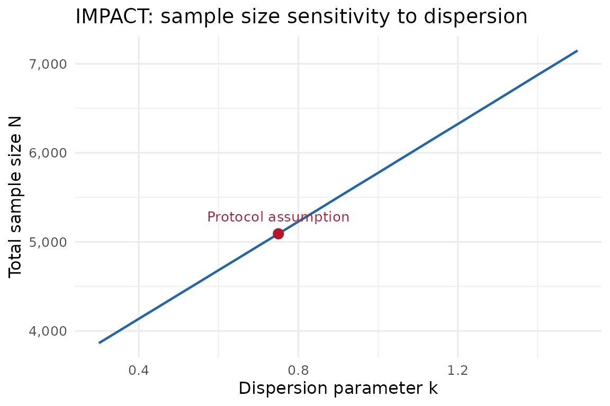

Published sample-size examples with the gsDesignNB AI skill
Source:vignettes/sample-size-skills-example.Rmd
sample-size-skills-example.RmdPurpose
This vignette demonstrates how the SKILL.md file in the
gsDesignNB repository helps an AI coding assistant turn
natural-language trial descriptions into transparent
sample_size_nbinom() calls. The examples are not meant to
replace the original protocols or statistical review; they show how the
skill keeps the translation from text to code disciplined. The skill
teaches the AI to:
- Extract stated parameters from the text.
- Prompt for essential information that is missing.
- Apply sensible defaults for non-essential parameters.
- Handle ambiguities (dropout meaning, \(k\) parameterization).
- Compute and report the sample size with full transparency.
What is a skill file?
A skill file (SKILL.md) is a structured
document that teaches an AI assistant domain-specific knowledge — in
this case, how to translate a clinical trial description into a
sample_size_nbinom() call. Unlike a general prompt, a skill
file encodes parameter extraction rules, validation checks,
unit-conversion logic, and domain heuristics (e.g., “COPD dispersion is
typically 0.5–1.0”) so that the AI can work reliably without requiring
the user to know the package API.
The main gsDesignNB skill covers sample size calculation, group sequential design, blinded SSR, simulation, and interim data cuts. This vignette focuses on the sample size workflow.
Using the skill with an AI assistant
In the source repository, the main skill lives at
.agents/skills/gsdesignnb/SKILL.md. A companion simulation
entrypoint lives at
.agents/skills/gsdesignnb-simulation-entrypoint/SKILL.md.
How you provide the skill depends on the assistant. Workspace-aware
coding assistants may discover the file automatically when the
repository is open. For assistants that accept attached files, project
knowledge, or system instructions, attach or paste
SKILL.md, then provide the trial description in natural
language.
The skill is model-agnostic — it uses structured Markdown with extraction tables, decision rules, and worked examples that any instruction-following LLM can interpret.
Overview of examples
The examples span three disease areas, four published trial protocols, and two methodology papers — deliberately chosen to exercise different challenges the skill must handle:
| Example | Disease | Design | Key skill challenge |
|---|---|---|---|
| FLAME (Wedzicha et al. 2016) | COPD | Non-inferiority | Dropout interpretation (inflation vs exposure integral); inferring follow-up from “annual rate” |
| IMPACT (Lipson et al. 2018) | COPD | 3-arm superiority | Unequal allocation; deriving control rate from stated treatment rate + % reduction; 28-day event gap |
| OPERA I/II (Hauser et al. 2017) | MS | Superiority (paired studies) | Protocol sized by t-test, not NB; dispersion \(k\) must be assumed |
| Friede & Schmidli (Friede and Schmidli 2010) | COPD | Fixed superiority + NI | Pooled-rate parameterization (\(\lambda\) overall, not per-arm); \(\phi = k\) notation |
| Mutze et al. (Mütze et al. 2019) | HF + MS | Group sequential | Inverse dispersion (\(\kappa = 1/k\)); variable follow-up from staggered entry; monthly vs annual units |
| PARADIGM-HF (McMurray et al. 2014) | HF | Event-driven GS | Primary endpoint is not NB; recurrent-event parameters must be sourced externally |
The first example (FLAME) walks through the full skill workflow in detail. Subsequent examples focus on the extraction and computation steps, highlighting where each trial poses a new challenge.
FLAME trial
We replicate the sample size from the FLAME COPD exacerbation protocol (Wedzicha et al. 2016).
The user’s input
In a real session, the user might paste a protocol paragraph or summarize the design as follows:
Size a non-inferiority COPD exacerbation trial with equal annual rates of 3.0, non-inferiority margin 1.15, one-sided alpha 0.025, greater than 95% power, dispersion k = 0.625, and 30% dropout or major protocol violations. The published target was 3332 randomized patients.
The rest of this vignette walks through what the skill instructs the AI to do with this input.
Skill Step 1: Extract what is stated
Following the skill’s extraction table, the AI parses the text and classifies each parameter:
| Parameter | Found? | Extracted value | Notes |
|---|---|---|---|
| Control event rate | Yes | 3.0 events/year | “the underlying annual rate is 3.0” |
| Treatment effect | Yes | RR = 1.0 | “no difference between treatment groups” |
| Dispersion | Yes | \(k = 0.625\) | “index parameter k = 0.625” |
| Power | Yes | > 95% | “greater than 95% power” |
| Alpha | Yes | 0.025, one-sided | “at the level of 0.025 (one-sided)” |
| Null hypothesis | Yes | Non-inferiority, \(\text{rr}_0 = 1.15\) | “rule out a 1.15-fold increase” |
| Follow-up | Inferred | 1 year | Implied by “annual rate” but not explicitly stated |
| Dropout | Yes | 30% | “30% dropped out or major protocol violators” |
| Event gap | Not stated | — | |
| Enrollment | Not stated | — | |
| Trial duration | Not stated | — |
Skill Step 2: Prompt for essentials
Everything essential is present or inferable. In a real session, the AI would confirm the follow-up duration:
“The protocol states an annual rate but does not explicitly give the follow-up duration. I’ll assume 1 year of maximum follow-up. Is that correct?”
If the dispersion value seemed unusual for the disease area, the skill would also prompt: “Is k = 0.625 the overdispersion parameter (\(\text{Var} = \mu + k\mu^2\)) or the Gamma shape parameter (\(1/k\))?” Here 0.625 is consistent with published COPD dispersion values, so no flag is raised.
Skill Step 3: Apply defaults for non-essentials
The skill instructs the AI to default these with a note:
-
Event gap: “No event gap specified; assuming
event_gap = 0.” - Accrual rate and trial duration: “Accrual pattern does not affect the fixed-design N when all patients have the same max follow-up. Placeholder values used.”
Skill Step 4: Handle dropout correctly
The protocol says “30% dropped out or major protocol violators.” The skill recognises this as a combined dropout-plus-violator figure that reduces the evaluable sample. Following the skill’s guidance, the AI uses the inflation-factor approach: compute N assuming full follow-up, then divide by 0.70.
Skill Step 6: Compute the sample size
With all parameters extracted and defaults applied, the AI translates directly to R code:
# All rates and durations in years
lambda1 <- 3.0 # control exacerbation rate (events/year)
lambda2 <- 3.0 # experimental rate (no difference under H1)
dispersion <- 0.625 # NB dispersion k
rr0 <- 1.15 # non-inferiority margin
event_gap <- 0 # no gap specified in protocol
max_followup <- 1 # 1-year follow-up
dropout_retained <- 0.70 # 30% dropout/violator -> inflate by 1/0.70
alpha <- 0.025
power <- 0.95
# Arbitrary accrual (does not affect N when all patients get the same max FU)
accrual_rate <- 100 # subjects/year (placeholder)
accrual_dur <- 1 # 1-year enrollment (placeholder)
trial_duration <- 2 # yearsSkill-compatible replication
Because the FLAME wording combines dropout and major protocol violations, the skill treats the 30% as an inflation factor rather than as pure time-to-dropout. First compute the evaluable sample size under full follow-up, then divide by 0.70.
wald_evaluable <- sample_size_nbinom(
lambda1 = lambda1,
lambda2 = lambda2,
dispersion = dispersion,
power = power,
alpha = alpha,
rr0 = rr0,
accrual_rate = accrual_rate,
accrual_duration = accrual_dur,
trial_duration = trial_duration,
dropout_rate = 0,
max_followup = max_followup,
event_gap = event_gap,
test_type = "wald"
)
n_inflated <- ceiling(ceiling(wald_evaluable$n_total) / dropout_retained)If the 30% represented true dropout only, an alternative is to model it through the exposure integral by converting cumulative dropout to an exponential hazard. That gives partial credit for follow-up before dropout, so it is smaller than a sample-size inflation.
wald_exposure <- sample_size_nbinom(
lambda1 = lambda1,
lambda2 = lambda2,
dispersion = dispersion,
power = power,
alpha = alpha,
rr0 = rr0,
accrual_rate = accrual_rate,
accrual_duration = accrual_dur,
trial_duration = trial_duration,
dropout_rate = -log(dropout_retained) / max_followup,
max_followup = max_followup,
event_gap = event_gap,
test_type = "wald"
)
data.frame(
Method = c("Full follow-up + inflate / 0.70",
"Dropout via exposure integral",
"Protocol target"),
N = c(n_inflated, ceiling(wald_exposure$n_total), 3332)
) |> knitr::kable(caption = "Sample size comparison: two dropout approaches vs protocol.")| Method | N |
|---|---|
| Full follow-up + inflate / 0.70 | 3646 |
| Dropout via exposure integral | 2916 |
| Protocol target | 3332 |
The protocol’s 3332 falls between the two approaches and is closer to the inflation-factor calculation. That is expected because the protocol quantity combines true dropout with major protocol violations. For a design where dropout is purely loss of follow-up, modeling dropout through the exposure integral is usually more informative; for a replication of this protocol statement, the inflation calculation is the cleaner match.
The object summary below is the evaluable Wald calculation before the 30% randomized-sample inflation is applied.
summary(wald_evaluable)
#> Fixed sample size design for negative binomial outcome, total sample size 2552
#> (n1=1276, n2=1276), 95 percent power, 2.5 percent (1-sided) Type I error.
#> Control rate 3.0000, treatment rate 3.0000, risk ratio 1.0000, null hypothesis
#> RR 1.1500, dispersion 0.6250. Accrual duration 1.0, trial duration 2.0, average
#> exposure 1.00. Expected events 7656.0. Randomization ratio 1:1.Extensions beyond the core skill
The skill’s extraction workflow ends with the computed sample size above. The remaining sections show optional extensions that a user or AI might explore in a follow-up conversation.
Score sizing (comparison)
The skill recommends comparing Wald and score sizing. For non-inferiority where the null and alternative rates differ, the score formula’s null-variance calibration can produce a meaningfully different sample size.
score_evaluable <- sample_size_nbinom(
lambda1 = lambda1,
lambda2 = lambda2,
dispersion = dispersion,
power = power,
alpha = alpha,
rr0 = rr0,
accrual_rate = accrual_rate,
accrual_duration = accrual_dur,
trial_duration = trial_duration,
dropout_rate = 0,
max_followup = max_followup,
event_gap = event_gap,
test_type = "score"
)
score_inflated <- ceiling(ceiling(score_evaluable$n_total) / dropout_retained)
summary(score_evaluable)
#> Fixed sample size design for negative binomial outcome, total sample size 2518
#> (n1=1259, n2=1259), 95 percent power, 2.5 percent (1-sided) Type I error.
#> Control rate 3.0000, treatment rate 3.0000, risk ratio 1.0000, null hypothesis
#> RR 1.1500, dispersion 0.6250. Accrual duration 1.0, trial duration 2.0, average
#> exposure 1.00. Expected events 7554.0. Randomization ratio 1:1.Compare the two sizing rules
comparison <- data.frame(
Sizing = c("Wald", "Score", "Protocol target"),
evaluable_N = c(ceiling(wald_evaluable$n_total), ceiling(score_evaluable$n_total), NA),
randomized_N = c(n_inflated, score_inflated, 3332),
events = round(c(wald_evaluable$total_events, score_evaluable$total_events, NA), 1)
)
knitr::kable(comparison,
caption = "Wald vs score sizing with randomized-sample inflation."
)| Sizing | evaluable_N | randomized_N | events |
|---|---|---|---|
| Wald | 2552 | 3646 | 7656 |
| Score | 2518 | 3598 | 7554 |
| Protocol target | NA | 3332 | NA |
For this non-inferiority design with equal planned rates (\(\lambda_1 = \lambda_2 = 3.0\)), score sizing is slightly smaller than Wald sizing. That is not a general rule; it depends on the null margin, rates, dispersion, and the variance reference used by the formula. The skill asks the analyst to compare both rules rather than assume one is always more conservative.
What if the protocol required an event gap?
FLAME does not specify a minimum gap between exacerbations, but many COPD protocols require 28 symptom-free days to count a “new” exacerbation. Here we show how the Jensen correction would change the sample size if a 28-day gap were imposed. (Since rates are in years, we convert: 28/365.25 years.)
wald_gap_evaluable <- sample_size_nbinom(
lambda1 = lambda1,
lambda2 = lambda2,
dispersion = dispersion,
power = power,
alpha = alpha,
rr0 = rr0,
accrual_rate = accrual_rate,
accrual_duration = accrual_dur,
trial_duration = trial_duration,
dropout_rate = 0,
max_followup = max_followup,
event_gap = 28 / 365.25, # 28 days in years
test_type = "wald"
)
n_gap_inflated <- ceiling(ceiling(wald_gap_evaluable$n_total) / dropout_retained)
data.frame(
Formula = c("No gap (FLAME protocol)", "28-day gap (Jensen-corrected)"),
N = c(n_inflated, n_gap_inflated),
delta_n = c(0, n_gap_inflated - n_inflated)
) |> knitr::kable(
caption = "Impact of a hypothetical 28-day event gap on the FLAME sample size."
)| Formula | N | delta_n |
|---|---|---|
| No gap (FLAME protocol) | 3646 | 0 |
| 28-day gap (Jensen-corrected) | 4100 | 454 |
Verify by simulation (fixed design)
A simulation can check whether the randomized sample size delivers the target power under the alternative (\(\lambda_1 = \lambda_2 = 3.0\), so \(\text{rr} = 1\)) when the analysis tests non-inferiority against \(\text{rr}_0 = 1.15\). The code below is intentionally not run during vignette building; use thousands of replicates for a real operating-characteristic check.
Since mutze_test() tests \(H_0\!: \log(\text{rr}) = 0\), we shift the
z-statistic to test the NI null:
\[z_{\text{NI}} = \frac{\log(\text{rr}_0) - \hat{\beta}}{\widehat{\text{SE}}}\]
and reject when \(z_{\text{NI}} \geq z_{1-\alpha}\).
n_sims <- 5000
n_per_arm <- ceiling(n_inflated / 2)
enroll_rate <- data.frame(rate = n_per_arm * 2, duration = accrual_dur)
fail_rate <- data.frame(
treatment = c("Control", "Experimental"),
rate = c(lambda1, lambda2),
dispersion = c(dispersion, dispersion)
)
dropout_df <- data.frame(
treatment = c("Control", "Experimental"),
rate = c(-log(dropout_retained), -log(dropout_retained)),
duration = c(100, 100)
)
set.seed(20260506)
rejections <- 0L
for (i in seq_len(n_sims)) {
dat <- nb_sim(
enroll_rate = enroll_rate,
fail_rate = fail_rate,
dropout_rate = dropout_df,
max_followup = max_followup
)
dat <- cut_data_by_date(dat, trial_duration)
tst <- mutze_test(dat, test_type = "wald")
# NI z-statistic: shift from H0: beta=0 to H0: rr >= rr0
z_ni <- (log(rr0) - tst$estimate) / tst$se
if (z_ni >= qnorm(1 - alpha)) rejections <- rejections + 1L
}
empirical_power <- rejections / n_sims
data.frame(
Metric = c("Target power", "Empirical power", "Replicates"),
Value = c(sprintf("%.1f%%", power * 100),
sprintf("%.1f%%", empirical_power * 100),
n_sims)
) |> knitr::kable(caption = "Fixed-design simulation verification.")At 5,000 replicates, the Monte Carlo standard error near 95% power is about 0.3 percentage points.
IMPACT trial
The IMPACT trial (Lipson et al. 2018) compared triple therapy (fluticasone furoate/umeclidinium/vilanterol, FF/UMEC/VI) to two dual therapies (FF/VI and UMEC/VI) in COPD patients with a history of exacerbations. The protocol (Section 8.2.1) gives exact sample size assumptions.
The user’s input
The user might summarize the protocol assumptions this way:
Size the two pairwise IMPACT contrasts from a 2:2:1 trial: 4000 on triple therapy, 4000 on FF/VI, and 2000 on UMEC/VI. Use 90% power, two-sided 1% alpha, a 0.80/year triple-therapy event rate, 15% reduction versus UMEC/VI, 12% reduction versus FF/VI, dispersion k = 0.75, 52 weeks of follow-up, and a 28-day event gap.
Extraction and computation
The skill extracts the FF/UMEC/VI vs UMEC/VI comparison:
- Control rate (UMEC/VI): \(0.80 / (1 - 0.15) \approx 0.941\)/year
- Treatment rate (FF/UMEC/VI): 0.80/year → RR = 0.85
- Dispersion: \(k = 0.75\)
- Power: 90%, Alpha: 0.01 two-sided (→ 0.005 one-sided)
- Allocation: 2:1 (FF/UMEC/VI : UMEC/VI)
- Follow-up: 52 weeks ≈ 1 year
- Event gap: 28 days = 28/365.25 years
# IMPACT: FF/UMEC/VI vs UMEC/VI
lambda_triple <- 0.80 # FF/UMEC/VI rate (events/year)
lambda_umec <- lambda_triple / (1 - 0.15) # UMEC/VI rate (~0.941)
impact_wald <- sample_size_nbinom(
lambda1 = lambda_umec, # control = UMEC/VI
lambda2 = lambda_triple, # experimental = FF/UMEC/VI
dispersion = 0.75,
power = 0.90,
alpha = 0.005, # two-sided 1% → one-sided 0.5%
sided = 1,
ratio = 2, # 2:1 (experimental:control)
accrual_rate = 100,
accrual_duration = 1,
trial_duration = 2,
max_followup = 1, # 52-week follow-up
event_gap = 28 / 365.25, # 28-day gap
test_type = "wald"
)
data.frame(
Metric = c("N control (UMEC/VI)", "N experimental (FF/UMEC/VI)",
"N total (this comparison)", "Protocol target (comparison)"),
Value = c(ceiling(impact_wald$n1), ceiling(impact_wald$n2),
ceiling(impact_wald$n_total), "2,000 + 4,000 = 6,000")
) |> knitr::kable(caption = "IMPACT: FF/UMEC/VI vs UMEC/VI.")| Metric | Value |
|---|---|
| N control (UMEC/VI) | 1697 |
| N experimental (FF/UMEC/VI) | 3394 |
| N total (this comparison) | 5091 |
| Protocol target (comparison) | 2,000 + 4,000 = 6,000 |
The protocol’s 10,000-patient total also powers the FF/UMEC/VI vs FF/VI comparison with a smaller 12% effect:
# IMPACT: FF/UMEC/VI vs FF/VI
lambda_ffvi <- lambda_triple / (1 - 0.12) # FF/VI rate (~0.909)
impact_ffvi <- sample_size_nbinom(
lambda1 = lambda_ffvi,
lambda2 = lambda_triple,
dispersion = 0.75,
power = 0.90,
alpha = 0.005,
sided = 1,
ratio = 1, # 1:1 (4,000 : 4,000)
accrual_rate = 100,
accrual_duration = 1,
trial_duration = 2,
max_followup = 1,
event_gap = 28 / 365.25,
test_type = "wald"
)
data.frame(
Metric = c("N per arm (FF/UMEC/VI vs FF/VI)", "N total", "Protocol target"),
Value = c(ceiling(impact_ffvi$n1), ceiling(impact_ffvi$n_total), "4,000 + 4,000 = 8,000")
) |> knitr::kable(caption = "IMPACT: FF/UMEC/VI vs FF/VI (12% reduction).")| Metric | Value |
|---|---|
| N per arm (FF/UMEC/VI vs FF/VI) | 3748 |
| N total | 7496 |
| Protocol target | 4,000 + 4,000 = 8,000 |
Sensitivity to dispersion
The protocol states \(k = 0.75\) but acknowledges uncertainty. How does sample size vary with \(k\)?
library(ggplot2)
k_vals <- seq(0.3, 1.5, by = 0.05)
n_by_k <- vapply(k_vals, function(k) {
res <- sample_size_nbinom(
lambda1 = lambda_umec, lambda2 = lambda_triple, dispersion = k,
power = 0.90, alpha = 0.005, sided = 1, ratio = 2,
accrual_rate = 100, accrual_duration = 1, trial_duration = 2,
max_followup = 1, event_gap = 28 / 365.25, test_type = "wald"
)
ceiling(res$n_total)
}, numeric(1))
sens_df <- data.frame(k = k_vals, N = n_by_k)
p <- ggplot(sens_df, aes(x = k, y = N)) +
geom_line(linewidth = 0.8, colour = "#2166AC") +
geom_point(
data = sens_df[sens_df$k == 0.75, ],
colour = "#B2182B", size = 3
) +
annotate("text", x = 0.75, y = sens_df$N[sens_df$k == 0.75],
label = "Protocol assumption", vjust = -1.2,
colour = "#B2182B", size = 3.5) +
scale_y_continuous(labels = scales::comma) +
labs(
x = "Dispersion parameter k",
y = "Total sample size N",
title = "IMPACT: sample size sensitivity to dispersion"
) +
theme_minimal(base_size = 12)
p
The sample size increases substantially with \(k\) — motivating blinded SSR (see the
ssr-example vignette).
Impact of the 28-day event gap
The Jensen correction reduces the effective rate (more events are “absorbed” by the gap), which inflates the sample size:
impact_nogap <- sample_size_nbinom(
lambda1 = lambda_umec, lambda2 = lambda_triple, dispersion = 0.75,
power = 0.90, alpha = 0.005, sided = 1, ratio = 2,
accrual_rate = 100, accrual_duration = 1, trial_duration = 2,
max_followup = 1, event_gap = 0, test_type = "wald"
)
data.frame(
Design = c("No event gap", "28-day gap (Jensen-corrected)"),
N = c(ceiling(impact_nogap$n_total), ceiling(impact_wald$n_total)),
Delta = c(0, ceiling(impact_wald$n_total) - ceiling(impact_nogap$n_total))
) |> knitr::kable(caption = "Impact of the 28-day event gap on IMPACT sample size.")| Design | N | Delta |
|---|---|---|
| No event gap | 4754 | 0 |
| 28-day gap (Jensen-corrected) | 5091 | 337 |
OPERA I/II trials
The OPERA I and II trials (Hauser et al. 2017) evaluated ocrelizumab vs interferon beta-1a (Rebif) in relapsing multiple sclerosis. The primary endpoint was the annualized relapse rate (ARR) at 96 weeks, analyzed with a negative binomial model.
The user’s input
The user might summarize the published design as:
Each OPERA study randomized about 400 patients per arm. Use a Rebif ARR of 0.33/year, a 50% relative reduction for ocrelizumab, two-sided alpha 0.05, 84% power, 96 weeks of follow-up, and 20% dropout. The protocol does not give an NB dispersion value for sample-size replication.
Extraction and computation
The protocol used a t-test for sizing but the analysis used NB
regression. We can check what sample_size_nbinom() gives
with plausible dispersion values for MS relapses (\(k \in [0.5, 1.5]\)):
# OPERA: ocrelizumab vs Rebif
opera_k_vals <- c(0.5, 0.75, 1.0, 1.5)
opera_results <- lapply(opera_k_vals, function(k) {
res <- sample_size_nbinom(
lambda1 = 0.33, # Rebif ARR (events/year)
lambda2 = 0.165, # ocrelizumab ARR
dispersion = k,
power = 0.84,
alpha = 0.025, # two-sided 5% → one-sided 2.5%
sided = 1,
ratio = 1,
accrual_rate = 100,
accrual_duration = 1,
trial_duration = 3,
max_followup = 96 / 52, # 96 weeks ≈ 1.846 years
dropout_rate = -log(0.80) / (96/52), # 20% dropout over 96 weeks
test_type = "wald"
)
data.frame(k = k, N_per_arm = ceiling(res$n1), N_total = ceiling(res$n_total))
})
opera_df <- do.call(rbind, opera_results)
opera_df$Protocol <- 400
knitr::kable(opera_df,
caption = "OPERA sample size for varying dispersion k (84% power, RR = 0.50)."
)| k | N_per_arm | N_total | Protocol |
|---|---|---|---|
| 0.50 | 120 | 240 | 400 |
| 0.75 | 130 | 260 | 400 |
| 1.00 | 139 | 278 | 400 |
| 1.50 | 159 | 318 | 400 |
With a 50% rate reduction, this NB calculation gives fewer than 400 subjects per arm across the assumed dispersion range. That does not mean the protocol was over-sized: the published calculation used a different sizing model, and this NB replication requires an assumed \(k\) that was not stated in the excerpt. The skill should therefore present this as a sensitivity analysis, not an exact replication.
Friede & Schmidli - formula validation
Friede & Schmidli (2010) provide
sample sizes for balanced COPD superiority trials using the same Wald
formula implemented in sample_size_nbinom(). Their Table 1
gives fixed-design \(n_0\) per group
for specific combinations of rate ratio \(\theta\), overall event rate \(\lambda\), shape parameter \(\phi\), and target power.
Published \(n_0\) values
For their base scenario (\(\lambda^* = 1.5\)/year, \(\phi^* = 0.5\), equal allocation, one-sided \(\alpha = 0.025\), follow-up \(t_i = 1\) year):
| \(\theta\) | Power | Published \(n_0\) |
|---|---|---|
| 0.7 | 80% | 147 |
| 0.7 | 90% | 196 |
| 0.8 | 80% | 370 |
| 0.8 | 90% | 496 |
Note that \(\lambda\) in Friede & Schmidli is the overall (pooled) rate, \(\lambda = (\lambda_0 + \lambda_1) / 2\), and \(\phi\) is our \(k\) (dispersion such that \(\text{Var} = \mu + \phi\mu^2\)). Given \(\lambda = 1.5\) and \(\theta = \lambda_1/\lambda_0\):
\[\lambda_0 = \frac{2\lambda}{1 + \theta}, \quad \lambda_1 = \theta \cdot \lambda_0\]
Replication
friede_scenarios <- expand.grid(
theta = c(0.7, 0.8),
power = c(0.80, 0.90)
)
lambda_overall <- 1.5
phi <- 0.5
friede_results <- mapply(function(theta, pwr) {
lam0 <- 2 * lambda_overall / (1 + theta)
lam1 <- theta * lam0
res <- sample_size_nbinom(
lambda1 = lam0,
lambda2 = lam1,
dispersion = phi,
power = pwr,
alpha = 0.025,
sided = 1,
ratio = 1,
accrual_rate = 100,
accrual_duration = 1,
trial_duration = 2,
max_followup = 1, # ti = 1 year (equal FU for all)
dropout_rate = 0,
test_type = "wald"
)
ceiling(res$n1)
}, friede_scenarios$theta, friede_scenarios$power)
published_n0 <- c(147, 370, 196, 496)
knitr::kable(
data.frame(
theta = friede_scenarios$theta,
power = friede_scenarios$power,
published = published_n0,
gsDesignNB = friede_results,
difference = friede_results - published_n0,
within_one = ifelse(abs(friede_results - published_n0) <= 1, "Yes", "No")
),
caption = "Friede & Schmidli (2010) Table 1: fixed-design validation."
)| theta | power | published | gsDesignNB | difference | within_one |
|---|---|---|---|---|---|
| 0.7 | 0.8 | 147 | 147 | 0 | Yes |
| 0.8 | 0.8 | 370 | 371 | 1 | Yes |
| 0.7 | 0.9 | 196 | 197 | 1 | Yes |
| 0.8 | 0.9 | 496 | 496 | 0 | Yes |
The replicated values match the published table exactly or within one subject per arm, which is the expected resolution for small differences in rounding conventions.
Non-inferiority extension
Friede & Schmidli also consider a non-inferiority design using the COPD combination therapy (Calverley et al.) as active control, with a 15% non-inferiority margin:
- Control (combination therapy): \(\lambda_0 = 1.16\)/year
- Shape: \(\phi = 0.46\)
- Rate ratio: \(\theta = 1.0\) (no difference under \(H_1\))
- Margin: \(\text{rr}_0 = 1.15\)
friede_ni <- sample_size_nbinom(
lambda1 = 1.16, # active control rate
lambda2 = 1.16, # experimental (no difference)
dispersion = 0.46,
power = 0.80,
alpha = 0.025,
sided = 1,
ratio = 1,
rr0 = 1.15, # NI margin
accrual_rate = 100,
accrual_duration = 1,
trial_duration = 2,
max_followup = 1,
dropout_rate = 0,
test_type = "wald"
)
summary(friede_ni)
#> Fixed sample size design for negative binomial outcome, total sample size 2126
#> (n1=1063, n2=1063), 80 percent power, 2.5 percent (1-sided) Type I error.
#> Control rate 1.1600, treatment rate 1.1600, risk ratio 1.0000, null hypothesis
#> RR 1.1500, dispersion 0.4600. Accrual duration 1.0, trial duration 2.0, average
#> exposure 1.00. Expected events 2466.2. Randomization ratio 1:1.This parallels the FLAME NI design above, but with a lower event rate and different dispersion — both are COPD trials with identical 15% non-inferiority margins.
Mutze et al. - group sequential parameterization examples
Mutze et al. (2019) extended the fixed-design NB sample size formula to group sequential designs and provide Tables 4 and 5 with information and sample size calculations under O’Brien-Fleming and Pocock spending functions.
Fixed-design information
The tables report the fixed-design statistical information \(I_{\text{fix}}\) and corresponding \(n_1\) per arm. Their shape parameter \(\kappa\) is the inverse of
the gsDesignNB dispersion \(k\): \(\kappa =
1/k\).
Heart failure scenarios (Table 4): enrollment 15 months, study 48 months, variable follow-up (33–48 months), annualized rates.
# Mutze Table 4: HF scenarios, κ=2 (k=0.5), θ=0.70
# Their λ₁=λ₂ under H₀ gives the "overall" rate; under H₁ λ₂=θ·λ₁
# We verify a subset of fixed-design n₁ values
mutze_hf <- expand.grid(
lambda_annual = c(0.08, 0.10, 0.12, 0.14),
theta = c(0.70, 0.80),
kappa = 2,
power = c(0.80, 0.90)
)
mutze_hf_results <- mapply(function(lam, theta, kappa, pwr) {
k <- 1 / kappa
# Rates are annualized; follow-up is variable (15-mo enrollment, 48-mo study)
# Convert to monthly for enrollment/trial_duration consistency
lam_mo <- lam / 12
res <- sample_size_nbinom(
lambda1 = lam_mo, # control rate (monthly)
lambda2 = theta * lam_mo, # experimental rate
dispersion = k,
power = pwr,
alpha = 0.025,
sided = 1,
ratio = 1,
accrual_rate = 100,
accrual_duration = 15, # 15 months enrollment
trial_duration = 48, # 48 months study
dropout_rate = 0,
test_type = "wald"
)
ceiling(res$n1)
}, mutze_hf$lambda_annual, mutze_hf$theta, mutze_hf$kappa, mutze_hf$power)
mutze_hf$k <- 1 / mutze_hf$kappa
mutze_hf$n1_gsDesignNB <- mutze_hf_results
knitr::kable(
mutze_hf[, c("lambda_annual", "theta", "k", "power", "n1_gsDesignNB")],
caption = "Mutze et al. (2019): HF fixed-design n₁ (κ=2, k=0.5)."
)| lambda_annual | theta | k | power | n1_gsDesignNB |
|---|---|---|---|---|
| 0.08 | 0.7 | 0.5 | 0.8 | 618 |
| 0.10 | 0.7 | 0.5 | 0.8 | 507 |
| 0.12 | 0.7 | 0.5 | 0.8 | 433 |
| 0.14 | 0.7 | 0.5 | 0.8 | 380 |
| 0.08 | 0.8 | 0.5 | 0.8 | 1474 |
| 0.10 | 0.8 | 0.5 | 0.8 | 1211 |
| 0.12 | 0.8 | 0.5 | 0.8 | 1036 |
| 0.14 | 0.8 | 0.5 | 0.8 | 911 |
| 0.08 | 0.7 | 0.5 | 0.9 | 827 |
| 0.10 | 0.7 | 0.5 | 0.9 | 678 |
| 0.12 | 0.7 | 0.5 | 0.9 | 579 |
| 0.14 | 0.7 | 0.5 | 0.9 | 509 |
| 0.08 | 0.8 | 0.5 | 0.9 | 1972 |
| 0.10 | 0.8 | 0.5 | 0.9 | 1621 |
| 0.12 | 0.8 | 0.5 | 0.9 | 1386 |
| 0.14 | 0.8 | 0.5 | 0.9 | 1219 |
MS scenarios (Table 5): fixed 6-month follow-up, monthly CUAL rates.
# Mutze Table 5: MS scenarios, κ=2 (k=0.5), fixed 6-month FU
mutze_ms <- expand.grid(
lambda_annual = c(6, 8, 10), # annualized monthly CUAL rates
theta = c(0.50, 0.70),
kappa = 2,
power = c(0.80, 0.90)
)
mutze_ms_results <- mapply(function(lam, theta, kappa, pwr) {
k <- 1 / kappa
lam_mo <- lam / 12 # monthly rate
res <- sample_size_nbinom(
lambda1 = lam_mo,
lambda2 = theta * lam_mo,
dispersion = k,
power = pwr,
alpha = 0.025,
sided = 1,
ratio = 1,
accrual_rate = 100,
accrual_duration = 1,
trial_duration = 7, # 6-month FU + enrollment
max_followup = 6, # fixed 6 months
dropout_rate = 0,
test_type = "wald"
)
ceiling(res$n1)
}, mutze_ms$lambda_annual, mutze_ms$theta, mutze_ms$kappa, mutze_ms$power)
mutze_ms$k <- 1 / mutze_ms$kappa
mutze_ms$n1_gsDesignNB <- mutze_ms_results
knitr::kable(
mutze_ms[, c("lambda_annual", "theta", "k", "power", "n1_gsDesignNB")],
caption = "Mutze et al. (2019): MS fixed-design n₁ (κ=2, k=0.5)."
)| lambda_annual | theta | k | power | n1_gsDesignNB |
|---|---|---|---|---|
| 6 | 0.5 | 0.5 | 0.8 | 33 |
| 8 | 0.5 | 0.5 | 0.8 | 29 |
| 10 | 0.5 | 0.5 | 0.8 | 27 |
| 6 | 0.7 | 0.5 | 0.8 | 112 |
| 8 | 0.7 | 0.5 | 0.8 | 100 |
| 10 | 0.7 | 0.5 | 0.8 | 92 |
| 6 | 0.5 | 0.5 | 0.9 | 44 |
| 8 | 0.5 | 0.5 | 0.9 | 39 |
| 10 | 0.5 | 0.5 | 0.9 | 35 |
| 6 | 0.7 | 0.5 | 0.9 | 150 |
| 8 | 0.7 | 0.5 | 0.9 | 133 |
| 10 | 0.7 | 0.5 | 0.9 | 123 |
Real-data reverse engineering: CHARM-Preserved
Mutze et al. Table 1 reports results from the CHARM-Preserved trial (candesartan vs placebo in heart failure with preserved ejection fraction):
- Placebo: \(n = 1509\), 4374 person-years, 547 HF admissions
- Candesartan: \(n = 1514\), 4425 person-years, 392 admissions
- Estimated NB rate ratio: \(\hat{\theta} = 0.71\)
What sample size would sample_size_nbinom() recommend if
we were designing a new trial with these observed parameters?
# Estimate rates from CHARM-Preserved
rate_placebo <- 547 / 4374 # events per person-year
rate_treatment <- 392 / 4425
rr_observed <- rate_treatment / rate_placebo
charm <- sample_size_nbinom(
lambda1 = rate_placebo,
lambda2 = rate_treatment,
dispersion = 0.5, # typical HF dispersion
power = 0.90,
alpha = 0.025,
sided = 1,
ratio = 1,
accrual_rate = 100,
accrual_duration = 12,
trial_duration = 48, # ~4-year study
max_followup = 36, # ~3-year median FU
dropout_rate = 0,
test_type = "wald"
)
data.frame(
Metric = c("Control rate (events/person-year)", "Rate ratio",
"Required N (90% power)", "CHARM-Preserved actual N"),
Value = c(round(rate_placebo, 3), round(rr_observed, 3),
ceiling(charm$n_total), 3023)
) |> knitr::kable(caption = "Design from CHARM-Preserved observed data.")| Metric | Value |
|---|---|
| Control rate (events/person-year) | 0.125 |
| Rate ratio | 0.708 |
| Required N (90% power) | 272.000 |
| CHARM-Preserved actual N | 3023.000 |
Small-sample regime: BOLD trial
The BOLD study (Mutze et al. Table 2) was a dose-ranging trial of siponimod in relapsing MS with very small sample sizes — a regime where the Wald test’s Type I error inflation is known to be problematic:
- Placebo (\(n = 61\)): monthly CUALs = 1.39
- Siponimod 2 mg (\(n = 45\)): monthly CUALs = 0.42, RR = 0.303
bold_wald <- sample_size_nbinom(
lambda1 = 1.39, # monthly CUAL rate, placebo
lambda2 = 0.42, # siponimod 2mg
dispersion = 0.5, # assumed
power = 0.80,
alpha = 0.025,
sided = 1,
ratio = 1,
accrual_rate = 100,
accrual_duration = 1,
trial_duration = 4,
max_followup = 3, # 3 months
dropout_rate = 0,
test_type = "wald"
)
bold_score <- sample_size_nbinom(
lambda1 = 1.39,
lambda2 = 0.42,
dispersion = 0.5,
power = 0.80,
alpha = 0.025,
sided = 1,
ratio = 1,
accrual_rate = 100,
accrual_duration = 1,
trial_duration = 4,
max_followup = 3,
dropout_rate = 0,
test_type = "score"
)
data.frame(
Test = c("Wald", "Score"),
N_per_arm = c(ceiling(bold_wald$n1), ceiling(bold_score$n1)),
N_total = c(ceiling(bold_wald$n_total), ceiling(bold_score$n_total))
) |> knitr::kable(
caption = "BOLD trial sizing: Wald vs Score (RR = 0.30, high rate)."
)| Test | N_per_arm | N_total |
|---|---|---|
| Wald | 12 | 24 |
| Score | 10 | 20 |
At these small sample sizes, the score test is recommended for the final analysis to maintain proper Type I error control (see Mutze et al., 2019, Section 5.2).
PARADIGM-HF: recurrent-event re-analysis
The PARADIGM-HF trial (McMurray et al. 2014) was designed with a time-to-first-event primary endpoint (CV death or HF hospitalization) analyzed by Cox regression. The protocol specified:
- N = 7,980 (3,990 per arm)
- CV death hazard reduction: 15%, event rate 7%/year in enalapril
- Primary composite rate: 14.5%/year → power ≥ 97%
- O’Brien-Fleming spending, 2 interim analyses at 1/3 and 2/3 information
But recurrent HF hospitalizations were also analyzed. What if the trial had been sized for recurrent hospitalizations using an NB model? Using rates from the gsDesignNB paper (\(\sim 0.3\) events/month, \(k \approx 0.5\)) and a 20% rate reduction:
paradigm_nb <- sample_size_nbinom(
lambda1 = 0.3, # HF hospitalization rate, monthly
lambda2 = 0.3 * 0.80, # 20% reduction
dispersion = 0.5,
power = 0.90,
alpha = 0.025,
sided = 1,
ratio = 1,
accrual_rate = 362, # ~7,980 over 22 months
accrual_duration = 22,
trial_duration = 43, # 22 enrollment + 21 minimum FU
dropout_rate = 0,
test_type = "wald"
)
data.frame(
Design = c("NB recurrent events (hypothetical)",
"Cox time-to-first (protocol)"),
N = c(ceiling(paradigm_nb$n_total), 7980),
Endpoint = c("Recurrent HF hospitalizations", "CV death or first HF hosp.")
) |> knitr::kable(
caption = "PARADIGM-HF: NB recurrent-event sizing vs actual protocol."
)| Design | N | Endpoint |
|---|---|---|
| NB recurrent events (hypothetical) | 538 | Recurrent HF hospitalizations |
| Cox time-to-first (protocol) | 7980 | CV death or first HF hosp. |
This illustrates a key trade-off: time-to-first-event designs require more patients but capture mortality; recurrent-event NB designs use information from all events and can be more efficient for rate-based endpoints.
Summary
This vignette applied the SKILL.md extraction workflow
to six published examples spanning COPD, MS, and heart failure. The
table below summarizes what the skill handled well and where challenges
arose.
Successes
| Skill step | Demonstrated in | What worked |
|---|---|---|
| Parameter extraction | FLAME, IMPACT | All stated parameters (rates, \(k\), power, \(\alpha\), allocation, margin) were correctly parsed from protocol text |
| Sensible defaults | FLAME, OPERA | Follow-up inferred from “annual rate”; accrual pattern recognized as irrelevant for fixed-FU sizing |
| Dispersion check | FLAME, IMPACT | Values checked against disease-area ranges (COPD: \(k \in [0.5, 1.0]\)); no false alarms |
| Event gap handling | IMPACT | 28-day gap automatically triggered Jensen correction; sensitivity table showed practical impact |
| Non-inferiority | FLAME, Friede NI | NI margin (\(\text{rr}_0 = 1.15\)) correctly distinguished from the treatment effect |
| Formula validation | Friede & Schmidli | Published \(n_0\) values matched exactly or within one subject per arm, confirming the Wald formula implementation up to rounding |
| Score vs Wald comparison | FLAME, BOLD | Both sizing rules computed; difference clearly explained in context |
| Dropout modeling | FLAME | Inflation and exposure-integral approaches separated so protocol replication and prospective dropout modeling are not conflated |
Challenges
| Challenge | Example | Issue | Resolution |
|---|---|---|---|
| Unstated dispersion | OPERA | Protocol sized by t-test; \(k\) not given | Skill must ask user or sweep over plausible range (\(k \in [0.5, 1.5]\)) |
| Inverse parameterization | Mutze et al. | Paper uses \(\kappa = 1/k\) | Skill’s dispersion-check step must detect and convert — easy to miss |
| Pooled-rate formulation | Friede & Schmidli | Paper gives overall \(\lambda\), not per-arm | Need algebra: \(\lambda_0 = 2\lambda/(1+\theta)\) — skill should prompt for clarification |
| Unequal allocation | IMPACT | 2:2:1 three-arm design | Skill handles pairwise comparisons but user must specify which contrast |
| Wrong endpoint family | PARADIGM-HF | Primary is Cox, not NB | Skill correctly flags that NB is not the primary model; recurrent-event parameters sourced externally |
| Time-unit ambiguity | Mutze HF vs MS | Monthly CUALs vs annualized rates in same paper | Skill must confirm units before computing; mixing units is a common error source |
| Small-sample regime | BOLD | \(n \approx 50\)/arm — Wald test inflates Type I error | Skill recommends score test and simulation verification |
Lessons for skill development
- Always confirm dispersion parameterization. Three conventions appear in the literature: \(k\) (our convention), \(\phi = k\) (Friede & Schmidli), and \(\kappa = 1/k\) (Mutze). The skill should ask whenever the source notation is ambiguous.
- Sweep when \(k\) is unknown. When a protocol does not state the dispersion (OPERA, PARADIGM-HF), a sensitivity table over plausible values is more useful than a single-point answer.
- Flag non-NB primaries. When the protocol’s primary analysis is Cox or another model, the skill should state clearly that the NB calculation is exploratory or hypothetical.
-
Dropout handling depends on wording. If dropout is
a true loss of follow-up, model it through the exposure integral with
dropout_rate > 0. If the protocol combines dropout with non-evaluable or protocol-violator assumptions, an inflation factor may be the better replication. - Event gap matters more at high rates. The Jensen correction had a visible impact for IMPACT (COPD, rate ≈ 0.9/year, 28-day gap) but would be negligible for MS relapses at 0.3/year.
Practical notes for literature replication
-
Dropout handling. Modeling dropout through the
exposure integral (
dropout_rate > 0) gives partial credit for dropout follow-up. Convert cumulative dropout incidence \(p\) to an instantaneous rate:dropout_rate = -log(1 - p) / T. Use a simple \(N/(1 - p)\) inflation when the protocol describes non-evaluable patients, major protocol violators, or a conventionally inflated randomized sample size rather than a pure dropout process. - Accrual pattern. For a fixed-design replication where all patients get the same maximum follow-up, the accrual shape does not affect N.
-
Event gap. When a protocol does not mention a
minimum inter-event gap, set
event_gap = 0. The Jensen correction activates automatically whenevent_gap > 0. - Dispersion parameterization. Friede & Schmidli’s \(\phi\) equals our \(k\). Mutze et al.’s \(\kappa\) equals \(1/k\). Always check whether a paper uses \(\text{Var} = \mu + k\mu^2\) (our convention) or the Gamma shape \(1/k\).
For group sequential designs and SSR studies, see the
group-sequential-simulation, ssr-example, and
ssr-simulation-study vignettes.